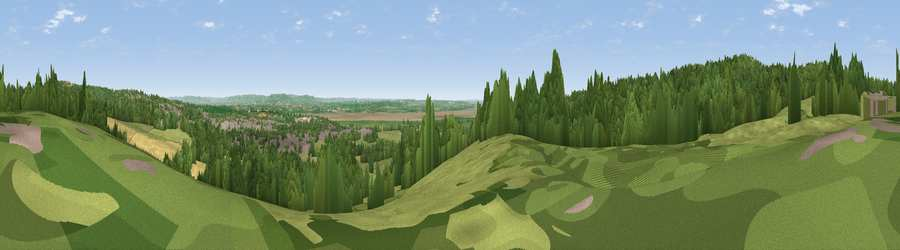

Viewpoint near Aylburton
#15828 in England · top 27% of its area beats it · near Aylburton · path 225 mWhere it is
The exact computed spot (SO 62025 03175). Click the marker for map links.
Public access: the nearest public right of way is about 225 m away — the final stretch may cross private land. Computed from Natural England's CRoW access layer and OpenStreetMap rights of way — not the legal definitive map. Always verify locally.
The view, rendered

A 360° render of this exact spot computed from the terrain model, tree cover and land cover — summer colours, afternoon light, calibrated against photographs of famous viewpoints. Real trees, hedges and buildings will differ in detail.
The panorama
Grey silhouette: terrain skyline in each direction (720 bearings, Earth curvature and refraction included). Dashed green: skyline with trees (+15 m) and buildings (+8 m) as obstacles. Blue strip: how far the ground is visible on each bearing.
Where the view opens
Wedge length = distance to the farthest visible ground on that bearing (vegetation-aware). Rings at 10, 25 and 50 km.
What fills the view
47% woodland · 34% grassland · 10% cropland · 6% built-up · 3% water
Angular shares of the visible panorama (visual magnitude), not map area. Landscape diversity 0.54 (0–1 Shannon).
Key numbers
More beautiful places nearby
The staircase of upgrades: each row has a higher view potential than everything closer. Driving times are estimates from straight-line distance, calibrated against real road routing — check an actual route before setting out.
| Place | Direction | Drive | Score |
|---|---|---|---|
| Viewpoint near Aylburton | WNW · 1 km | ~3 min | 56.8 |
| Viewpoint near Aylburton | W · 2 km | ~5 min | 68.8 |
| Viewpoint near Yorkley | NNE · 4 km | ~9 min | 70.9 |
| Viewpoint near Littledean | NNE · 12 km | ~22 min | 73.8 |
| Viewpoint near Stinchcombe | ESE · 13 km | ~23 min | 78.7 |
| Viewpoint near Stinchcombe | ESE · 13 km | ~23 min | 79.4 |
| Viewpoint near Stinchcombe | ESE · 13 km | ~23 min | 80.5 |
| Garway Hill | NW · 29 km | ~45 min | 84.6 |
51.72600, -2.55120 · source: screening · position refined by local search. Computed location — check access rights before visiting.